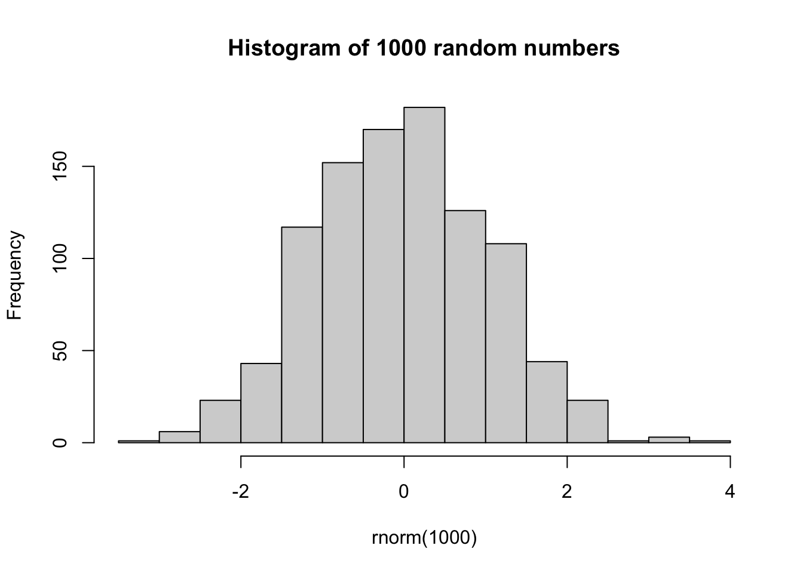

Chapter 3 Get to know RStudio interface
RStudio is an integrated development environment (IDE) for R.
3.1 RStudio Windows/Panels
Upon openning RStudio, you may see three windows or panels. However, it can be extended to four with the source panel opened (File > New File > R Script). You can reorder the windows / panels as per your wish.
3.1.1 Source window
The source panel is where you create and edit your collection of codes in i.e. R Scripts. This is your script editor. You can save it in “.R” extension and reuse your codes later or in the case of sudden crush of your computer. As you type in your codes, make a habit of saving the codes (command + S or Ctrl + S) as you do with most of the text editors. However, you have to run the codes actively through the Console (coming next in the discussion). You can run the whole page of codes or a snippet of code from the source panel.
There are many ways to run your codes from the Source panel through the Console. This could be with copy your codes and then paste on the Console and then hit enter. Or selectitng the code snippet that you wish to execute and clicking on the “Run” button on the top of the Source window. Alternatively, you can use the short-cut “Command + Enter” on Mac, or “Control + Enter” on Windows OS.
3.1.2 Environment / History (Connections / Build / Git etc)
This panel contains several tabs and the number depends on whether you have installed/ loaded one or few packages. I will touch on only the Environment and the History tabs.
The Environment tab of this panel shows you all the data objects (like vectors, dataframes etc) that you’ve created during the current R session . You can even double click on a loaded dataset on Environment tab and view in the Source panel, however, I won’t recommend this if the dataset is relatively sizable. The little broom on the top resets your environment and deletes the variables or data.
The History tab keeps the commands that you used and can be reused by double click to execute, or shift + double click moves to the Source editor (R Script).
3.1.3 Console
One can treat the Console Panel as the heart of RStudio. This is the default window in Base-R. You executes your R commands here actually. The Console works a is a prompt like a terminal in UNIX OS and let you check your codes interactively. Keep in mind that, when you turn off the RStudio, the Console deletes all the codes that you have executed in the current R session and when you reopen RStudio, you start with a fresh Console.
3.1.4 Files / Plots / Packages / Help
I will go through these four tabls in this panel. However, sometimes you may have an aditional tab called Viewer.
- Files - Files tab showes you where you are and what are the contents of the directory, which is equivalent to folder in windows OS. You can also see the path of the working directory on the top. Let’s set your current directory -
setwd("/Users/mahedi/Documents/Collaborations/UCL_CI/Introduction-to-R-for-Biologists")- Plots - This tab shows the plots after generated. One cool and handy feature of RStudio is to have it integrated. You can go back and forth between plots using left and right arrow keys. Small broom resets your plots panel and deletes from the memory. You can either copy your plot to the clipboard or export as .jpeg or .pdf file.
hist(rnorm(1000), main = "Histogram of 1000 random numbers")
- Packages - R packages are bundles of functions generated by R users and released for others to use for free. Sometimes low weight data are embedded within. This list contains all the packages that are downloaded in this computer (or came as base packages with R). And the loaded packages are the ones with tick marks (checked).
FYI, there are more than 19000 packages in CRAN, more than 2000 packages in Bioconductor.
- Help - Help tab provides the information regarding functions - detailed descriptions, usage, arguments etc. This utility can be summoned using the search box or by the
?function_namein the console. You can either type the name of a function in the search window, or use the code to search for a function with the name.